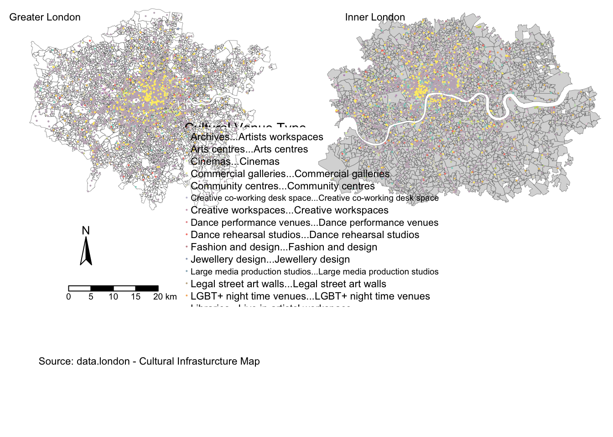

Chapter 5 Final Words
Now we are going to runa regression on
#----load all the libraries needed
# load in libraries
library(tidyverse)
library(scales)
library(lubridate)
library(ggridges)
library(gridExtra)
#regression
library(corrplot)
library(rgdal)
library(spdep)
library(car)
#----data visualization packages - https://serialmentor.com/dataviz/geospatial-data.html
#install.packages("remotes")
#install.packages("devtools")
library(remotes)
#install.packages("cowplot")
#devtools::install_github("wilkelab/cowplot")
library(cowplot)
#install.packages("colorspace")
library(colorspace)
#devtools::install_github("clauswilke/colorblindr")
#https://rdrr.io/github/clauswilke/dviz.supp/
#devtools::install_github("clauswilke/dviz.supp")
library(dviz.supp)
options(scipen = 999)#londonLSOAProfiles_inner <- londonLSOAProfiles[londonLSOAProfiles$'InnerOuter' == "Inner London"]
#londonLSOAProfiles_inner <- subset(londonLSOAProfiles, InnerOuter == "Inner London")
#---SUPPLY SIDE
#run a final OLS model
model_freq <- lm(log(`airbnb_freq`) ~
`bame_p` +
`nonUK` +
`education` +
`income` +
`house_mortg` +
`house_price` +
log(culture_freq) +
`culture_rating` +
log(culture_no_reviews) +
`InnerOuter`,
data = londonLSOAProfiles, na.action=na.exclude)
summary(model_freq)##
## Call:
## lm(formula = log(airbnb_freq) ~ bame_p + nonUK + education +
## income + house_mortg + house_price + log(culture_freq) +
## culture_rating + log(culture_no_reviews) + InnerOuter, data = londonLSOAProfiles,
## na.action = na.exclude)
##
## Residuals:
## Min 1Q Median 3Q Max
## -3.5626 -0.5109 0.0157 0.5449 2.3603
##
## Coefficients:
## Estimate Std. Error t value
## (Intercept) 2.63538110504 0.24043157103 10.961
## bame_p -0.00963537572 0.00196642081 -4.900
## nonUK 0.02053364024 0.00261807261 7.843
## education 0.04997617072 0.00250487142 19.952
## income -0.00004432773 0.00000357005 -12.417
## house_mortg -0.01941150058 0.00268457521 -7.231
## house_price 0.00000033457 0.00000007263 4.607
## log(culture_freq) 0.66318617366 0.02214776589 29.944
## culture_rating 0.10777262837 0.04585324860 2.350
## log(culture_no_reviews) -0.11235429273 0.00938368233 -11.973
## InnerOuterOuter London -1.06128496266 0.04761409968 -22.289
## Pr(>|t|)
## (Intercept) < 0.0000000000000002 ***
## bame_p 0.0000010284070944 ***
## nonUK 0.0000000000000068 ***
## education < 0.0000000000000002 ***
## income < 0.0000000000000002 ***
## house_mortg 0.0000000000006596 ***
## house_price 0.0000043254357387 ***
## log(culture_freq) < 0.0000000000000002 ***
## culture_rating 0.0188 *
## log(culture_no_reviews) < 0.0000000000000002 ***
## InnerOuterOuter London < 0.0000000000000002 ***
## ---
## Signif. codes: 0 '***' 0.001 '**' 0.01 '*' 0.05 '.' 0.1 ' ' 1
##
## Residual standard error: 0.7949 on 2202 degrees of freedom
## (2118 observations deleted due to missingness)
## Multiple R-squared: 0.8026, Adjusted R-squared: 0.8017
## F-statistic: 895.5 on 10 and 2202 DF, p-value: < 0.00000000000000022#and for future use, write the residuals out to a column in your dataframe
londonLSOAProfiles$model_freq_resids <- residuals(model_freq)# #https://stackoverflow.com/questions/6882709/how-do-i-deal-with-nas-in-residuals-in-a-regression-in-r
# #how to deal with residuals with NA - make use of the row names associated with the data frame provided as input to lm
# #londonLSOAProfiles[names(model_price$model_price_resids), "residual"] < - model_price$residuals
#
# #use the boom library for residuals - https://stackoverflow.com/questions/17216358/eliminating-nas-from-a-ggplot
# library(broom)
# df <- augment(model_freq)
londonLSOAProfiles %>%
drop_na(model_freq_resids) %>%
ggplot(aes(x= model_freq_resids)) +
geom_histogram(alpha = 0.5, fill = "#5EB296", colour = "#4D4D4D") +
scale_y_continuous(labels = comma) +
ggtitle("RESIDUAL DISTRUBUTION", subtitle = "Residual distrubution of the Airbnb Price model") +
labs(x= "log(Airbnb Freq)", y= "Count")
vif(model_freq)## bame_p nonUK education
## 4.538152 3.978719 4.708699
## income house_mortg house_price
## 6.543776 2.957488 2.762276
## log(culture_freq) culture_rating log(culture_no_reviews)
## 2.204125 1.028486 1.412077
## InnerOuter
## 1.956505#plot(model_freq)#nona <- londonLSOAProfiles[londonLSOAProfiles$model_freq_resids != 0]
#run durbin-watson test
durbinWatsonTest(model_freq$residuals)## [1] 1.479883library(sf)
library(tmap)
tm_shape(londonLSOAProfiles) +
tm_polygons("model_freq_resids",
palette = "RdYlBu")## Warning: The shape londonLSOAProfiles is invalid. See sf::st_is_valid
# tm_shape(londonLSOAProfiles[londonLSOAProfiles$InnerOuter == "Inner London"]) +
# tm_polygons("model_freq_resids",
# palette = "RdYlBu")#---DEMAND SIDE
#run a final OLS model
model_reviews <- lm(log(`airbnb_no_reviews`) ~
`bame_p` +
`nonUK` +
`education` +
`employees` +
`income` +
`house_mortg` +
`house_price` +
log(culture_freq) +
`culture_rating` +
log(culture_no_reviews) +
`InnerOuter`,
data = londonLSOAProfiles, na.action=na.exclude)
summary(model_reviews)##
## Call:
## lm(formula = log(airbnb_no_reviews) ~ bame_p + nonUK + education +
## employees + income + house_mortg + house_price + log(culture_freq) +
## culture_rating + log(culture_no_reviews) + InnerOuter, data = londonLSOAProfiles,
## na.action = na.exclude)
##
## Residuals:
## Min 1Q Median 3Q Max
## -5.5161 -0.6707 0.0736 0.7875 3.4592
##
## Coefficients:
## Estimate Std. Error t value
## (Intercept) 4.6381755749 0.4337531192 10.693
## bame_p -0.0127559657 0.0030149978 -4.231
## nonUK 0.0245368817 0.0038991381 6.293
## education 0.0703419899 0.0044535154 15.795
## employees -0.0106531667 0.0052597987 -2.025
## income -0.0000539288 0.0000053416 -10.096
## house_mortg -0.0257341822 0.0043465653 -5.921
## house_price 0.0000003998 0.0000001088 3.675
## log(culture_freq) 0.7103258032 0.0329625946 21.549
## culture_rating 0.1702199758 0.0682722083 2.493
## log(culture_no_reviews) -0.1056990674 0.0139662391 -7.568
## InnerOuterOuter London -1.2733303274 0.0709984664 -17.935
## Pr(>|t|)
## (Intercept) < 0.0000000000000002 ***
## bame_p 0.0000242365674015 ***
## nonUK 0.0000000003748518 ***
## education < 0.0000000000000002 ***
## employees 0.042947 *
## income < 0.0000000000000002 ***
## house_mortg 0.0000000037120704 ***
## house_price 0.000244 ***
## log(culture_freq) < 0.0000000000000002 ***
## culture_rating 0.012731 *
## log(culture_no_reviews) 0.0000000000000553 ***
## InnerOuterOuter London < 0.0000000000000002 ***
## ---
## Signif. codes: 0 '***' 0.001 '**' 0.01 '*' 0.05 '.' 0.1 ' ' 1
##
## Residual standard error: 1.183 on 2201 degrees of freedom
## (2118 observations deleted due to missingness)
## Multiple R-squared: 0.7318, Adjusted R-squared: 0.7304
## F-statistic: 545.8 on 11 and 2201 DF, p-value: < 0.00000000000000022# df <- augment(model_reviews)
#
# df %>%
# drop_na(.resid) %>%
# ggplot(aes(x= .resid)) +
# geom_histogram(alpha = 0.5, fill = "#5EB296", colour = "#4D4D4D") +
# scale_y_continuous(labels = comma) +
# ggtitle("RESIDUAL DISTRUBUTION", subtitle = "Residual distrubution of the Airbnb Price model") +
# labs(x= "log(Airbnb Freq)", y= "Count")vif(model_reviews)## bame_p nonUK education
## 4.816874 3.984577 6.720492
## employees income house_mortg
## 3.785775 6.614477 3.500494
## house_price log(culture_freq) culture_rating
## 2.799372 2.204369 1.029464
## log(culture_no_reviews) InnerOuter
## 1.412329 1.964142#run a final OLS model
model_price <- lm(log(`airbnb_price`) ~
`bame_p` +
`nonUK` +
`education` +
`employees` +
`income` +
`house_mortg` +
`house_price` +
log(culture_freq) +
`culture_rating` +
log(culture_no_reviews) +
`InnerOuter`,
data = londonLSOAProfiles, na.action=na.exclude)
summary(model_price)##
## Call:
## lm(formula = log(airbnb_price) ~ bame_p + nonUK + education +
## employees + income + house_mortg + house_price + log(culture_freq) +
## culture_rating + log(culture_no_reviews) + InnerOuter, data = londonLSOAProfiles,
## na.action = na.exclude)
##
## Residuals:
## Min 1Q Median 3Q Max
## -1.68286 -0.16871 0.01095 0.17287 1.76059
##
## Coefficients:
## Estimate Std. Error t value
## (Intercept) 3.8973400102 0.1175998723 33.141
## bame_p -0.0053772444 0.0008174313 -6.578
## nonUK 0.0025044878 0.0010571409 2.369
## education 0.0139481070 0.0012074445 11.552
## employees -0.0065157369 0.0014260454 -4.569
## income -0.0000037656 0.0000014482 -2.600
## house_mortg -0.0061729309 0.0011784481 -5.238
## house_price 0.0000002154 0.0000000295 7.300
## log(culture_freq) 0.0292232939 0.0089368739 3.270
## culture_rating 0.0860573321 0.0185100755 4.649
## log(culture_no_reviews) 0.0059034097 0.0037865501 1.559
## InnerOuterOuter London -0.1122407325 0.0192492232 -5.831
## Pr(>|t|)
## (Intercept) < 0.0000000000000002 ***
## bame_p 0.0000000000593 ***
## nonUK 0.01792 *
## education < 0.0000000000000002 ***
## employees 0.0000051692626 ***
## income 0.00938 **
## house_mortg 0.0000001775966 ***
## house_price 0.0000000000004 ***
## log(culture_freq) 0.00109 **
## culture_rating 0.0000035293005 ***
## log(culture_no_reviews) 0.11913
## InnerOuterOuter London 0.0000000063249 ***
## ---
## Signif. codes: 0 '***' 0.001 '**' 0.01 '*' 0.05 '.' 0.1 ' ' 1
##
## Residual standard error: 0.3207 on 2201 degrees of freedom
## (2118 observations deleted due to missingness)
## Multiple R-squared: 0.5, Adjusted R-squared: 0.4975
## F-statistic: 200.1 on 11 and 2201 DF, p-value: < 0.00000000000000022# df <- augment(model_price)
#
# df %>%
# drop_na(.resid) %>%
# ggplot(aes(x= .resid)) +
# geom_histogram(alpha = 0.5, fill = "#5EB296", colour = "#4D4D4D") +
# scale_y_continuous(labels = comma) +
# ggtitle("RESIDUAL DISTRUBUTION", subtitle = "Residual distrubution of the Airbnb Price model") +
# labs(x= "log(Airbnb Freq)", y= "Count")vif(model_price)## bame_p nonUK education
## 4.816874 3.984577 6.720492
## employees income house_mortg
## 3.785775 6.614477 3.500494
## house_price log(culture_freq) culture_rating
## 2.799372 2.204369 1.029464
## log(culture_no_reviews) InnerOuter
## 1.412329 1.964142#run a final OLS model
model_house_price <- lm(log(`house_price`) ~
`bame_p` +
`nonUK` +
`education` +
`employees` +
`income` +
`house_mortg` +
`house_price` +
log(culture_freq) +
`InnerOuter`,
data = londonLSOAProfiles, na.action=na.exclude)
summary(model_house_price)##
## Call:
## lm(formula = log(house_price) ~ bame_p + nonUK + education +
## employees + income + house_mortg + house_price + log(culture_freq) +
## InnerOuter, data = londonLSOAProfiles, na.action = na.exclude)
##
## Residuals:
## Min 1Q Median 3Q Max
## -1.73840 -0.09796 0.01697 0.11853 0.51976
##
## Coefficients:
## Estimate Std. Error t value
## (Intercept) 12.57153011644 0.04861193088 258.610
## bame_p -0.00501150538 0.00046818726 -10.704
## nonUK 0.00193872514 0.00060647973 3.197
## education 0.01260616302 0.00069147579 18.231
## employees -0.00798643248 0.00081798286 -9.764
## income -0.00000253933 0.00000082546 -3.076
## house_mortg 0.00356775920 0.00067611625 5.277
## house_price 0.00000096466 0.00000001691 57.031
## log(culture_freq) 0.01675049751 0.00463990851 3.610
## InnerOuterOuter London -0.06354429488 0.01094433702 -5.806
## Pr(>|t|)
## (Intercept) < 0.0000000000000002 ***
## bame_p < 0.0000000000000002 ***
## nonUK 0.001410 **
## education < 0.0000000000000002 ***
## employees < 0.0000000000000002 ***
## income 0.002122 **
## house_mortg 0.00000014430 ***
## house_price < 0.0000000000000002 ***
## log(culture_freq) 0.000313 ***
## InnerOuterOuter London 0.00000000732 ***
## ---
## Signif. codes: 0 '***' 0.001 '**' 0.01 '*' 0.05 '.' 0.1 ' ' 1
##
## Residual standard error: 0.1841 on 2203 degrees of freedom
## (2118 observations deleted due to missingness)
## Multiple R-squared: 0.8804, Adjusted R-squared: 0.8799
## F-statistic: 1801 on 9 and 2203 DF, p-value: < 0.00000000000000022